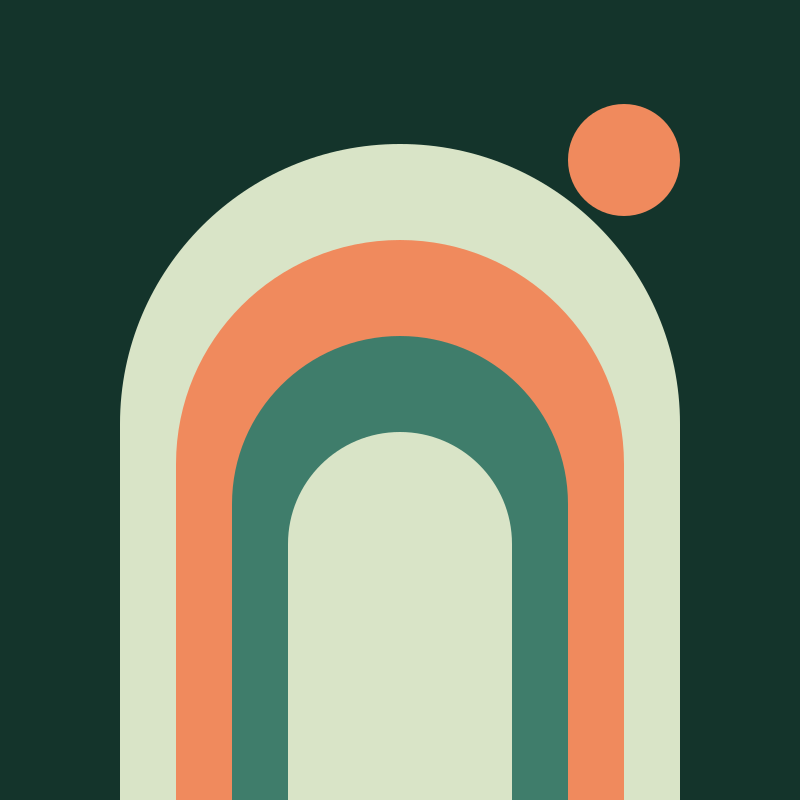

Pattern group
About
Portrait, short biography, quick facts and a skills list. The facts use a description list so each number keeps its label for screen readers.
Portrait and facts
.oo-about

About
I make identities that move and films that stay still long enough to look.
I started out cutting trailers for a regional cinema and slowly drifted toward the posters on its walls. Today I run a one-person studio that works across brand identity, editorial design and short documentary.
Most of my clients are small: festivals, publishers, research groups and the occasional restaurant. I like projects where the same person can draw the logo and film the launch.
- Years independent
- 12
- Projects shipped
- 140
- Short films
- 9
Tools and skills
- Brand identity
- Type design
- Editorial layout
- Documentary
- Motion graphics
- Front-end development